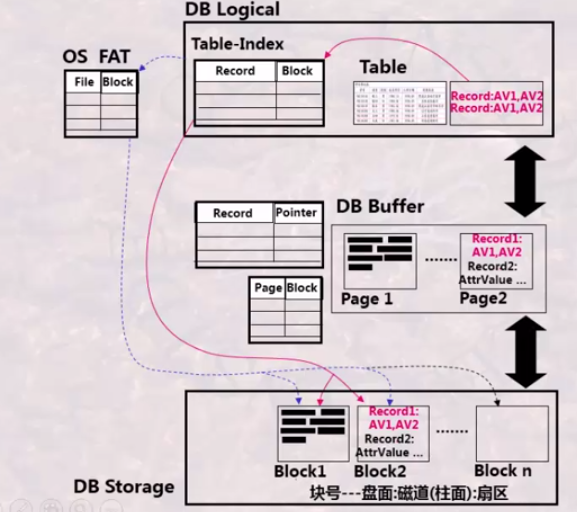
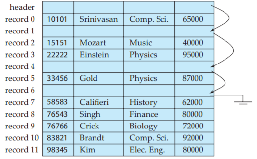
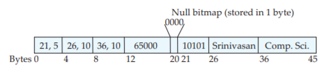
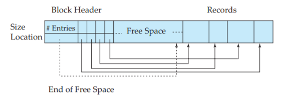
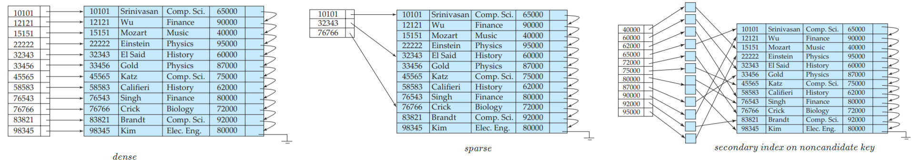

1. indexing and hashing
1. 磁盘特性
- 性能: 可以对数据进行块级或比特级的拆分，存储于多个磁盘上，并行读/写
- 可靠性: 需要处理数据读/写时发生的错误，通过奇偶校验纠错
RAID 0 : 只实现块级拆分，无纠错机制RAID 1 : 在RAID0 基础上，每个磁盘都有一个镜像磁盘，磁盘数 $2n$RAID 4 : 通过一个冗余盘完成 $n$ 个盘的奇偶校验: 若 $n$ 个盘上的第 $i$ 个block 的第 $j$ 位的 $1$ 的个数为奇数，冗余盘相应位置为 $1$，否则为 $0$。- 可以通过任意其他 $n$ 个盘恢复某一个盘的数据
- 校验盘读写频繁，损害较大
RAID 5 : 分布式的交叉检验
2. 宏观视图

- 组成部分:
DB Logical : 数据库系统程序 (或CPU ) 的逻辑视角，维护 记录-磁盘块 和 记录-内存页 的映射表；DB Storage : 存储器视角，数据库在磁盘上的映射；DB Buffer : 内存，OS 维护内存页到磁盘块的映射FAT :OS 维护的文件管理表，维护 文件-块 的映射。DBMS 首先通过FAT 把块占上，然后DBMS 内部维护元组到被占块的映射DBMS 通过映射表实现对内存和磁盘的控制，在此基础上就可以实现各种查询算法了
3. 数据库 → 磁盘
本节关心的问题是: 如何把数据库映射到磁盘，实现高效存储，且方便查询。其内容主要有:
- 元组在同一磁盘块的存储方式: 定长、变长
- 元组在外存的组织方式: 无序、顺序、索引、散列
- 同一数据表对应的不同磁盘块的组织方式 (
i.e. 文件组织): 顺序、链式、簇、索引、散列
(1). 定长记录

定长记录的实现比较简单，由于插入操作通常比删除更频繁，因此空间的复用是很重要的。
类似于堆管理，解决的方法是通过文件头维护一个空闲列表，插入时优先选择空闲位置，否则就向表尾插入。
(2). 变长记录
首先，对于包含变长属性的元组，通常将变长属性的 <偏移量，长度> 以及定长属性保存在记录的开头，而把变长属性的值放在尾部连续存储。

如图是一个 $\small\mathit{instructor}$ 记录，位于中间的空位图通过比特位表示前面第 $\small n$ 个属性是否是空值。
然后，对于包含变长元组的块，通常用分槽的页表示其结构 (

为便于添加
block header 中包含条目的个数free space 的末尾处的指针- 记录条目的数组，每个条目包含记录的位置和大小
4. Hash 文件
(1). 静态散列
(2). 可扩展散列
桶的数目动态变化，且是 $2$ 的幂。基本参数有:
- $k$: 哈希码的最大位数，桶的数目上限为 $2^k$
- $i$: 当前已使用的最大位数，当前桶数目为 $2^i$
- 每个被索引块右上角标注使用的位数
问题: 桶的数据增长过快，可能导致主存放不下
5. 索引文件
(1). 索引分类
按索引结构分类:
- 稠密索引 (
dense ): 主文件中每个记录的对应项 (搜索码) 都有一个索引项。 - 稀疏索引 (
sparse ): 在主文件中只为搜索码的部分值建立索引项。
- 聚集索引 / 主索引: 被索引的文件中的记录自身按某个搜索码指定的顺序存储，该搜索码对应的索引称为聚集索引或主索引，它常常是主码，但不必须是。
- 非聚集索引 / 辅助索引 (
nonclustering / secondary ): 搜索码指定的顺序和文件中记录存储的物理顺序不同的索引。
- 辅助索引必须是稠密索引
- 在稠密聚集索引中，每个索引项都要包含具有该搜索码值的第一条数据记录的指针
- 在稠密非聚集索引中，每个索引项必须存储所有具有相同该搜索码值的数据记录的指针。原因在于，如果稠密非聚集索引的搜索码不是候选码，那么具有同一码值的记录不唯一，且分布不连续
- 稠密索引查询速度比稀疏索引更快，但稀疏索引占用空间较小、插入删除维护的开销较小

如果一个关系有一个主码，大多数数据库会在主码上自动创建一个索引，并用之实现主码约束。